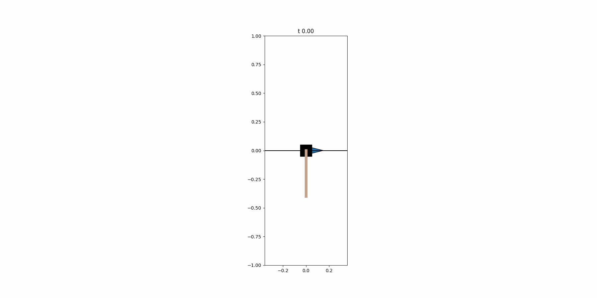

📁 Project Overview
🚀 Project Name
PID is All You Need: Cart Pole System Design and Control with NMPC and PID
🗓 Project Duration
2024.07.25 - 2024.09.27
💼 Competition
People's Choise Award, UOS ECE IF (Innovation Fair) Competition (Prize Money $200)
🧑🤝🧑 Team Member and Role
- Sewon Kim
🎥 Demonstation
Simulation Result
Physical Result
Poster

💼 Competition
- Target participants: Undergraduate students in the Department of Electrical and Computer Engineering
- Exhibition of project outcomes developed through the application of major coursework knowledge and personal initiative
- Only projects created by undergraduate students using their knowledge and efforts are eligible for submission
- Material costs of up to 500,000 KRW per team are covered (personal expenses are not permitted)
🎯 Introduction
I made a physical Cart-Pole (Inverted Pendulum) system with just 272 USD and applied nonlinear model predictive control (in simulation) as well as PID control (on the physical system)!
The Cart-Pole, a classic benchmark problem in control, consists of a cart driven by a linear actuator and a pole attached via an unactuated joint. If the pole is positioned vertically, its dynamics predict it will fall due to instability. The goal of the controller is to swing the pole up and balance it above the cart. The model and controller of the inverted pendulum are foundational for many systems, including humanoid robots and SpaceX's Starship.
The process of my project can be divided into the following steps:
- Mechanical Design: 3D modeling using Fusion 360 to design the physical structure of the system
- Electronics: Select specifications for sensors, actuators, processors, and other components
- Motor Control: Acceleration-based control of the stepper motor
- Hardware Fabrication
- Feedback (Closed) Loop: Measure real-time defined states through actuators and sensors, or estimate them using a state observer
- Simulation Environment: Set up a simulation environment in Python to validate control strategies for the Cart-Pole system
- Control: Formulate mathematical models and optimization problems for Model Predictive Control (MPC)
- Experiment: Tune parameters
I won the Popular Prize at the UOS ECE Innovation Fair and presented my project to the Department of Mathematics, thanks to Professor Dohyeon Kwon’s invitation, focusing on differential equations and mathematical optimization. I received valuable advice from undergraduate students in mechanical, electrical, and computer engineering. All of it was truly enjoyable.
LinkedIn Post
💡 Development
Electronics
- Stepper Motor: 27,000 KRW ($18.25 USD)
- Stepper Motor Driver: 25,000 KRW ($16.91 USD)
- Absolute Rotary Encoder: 75,000 KRW ($50.75 USD)
- Photo Interrupter Sensor (x2): 600 KRW ($0.41 USD)
- Raspberry Pi Pico 1: 6,400 KRW ($4.32 USD)
- Cedar Wooden Plank: 28,000 KRW ($18.96 USD)
- Wooden Rod: 2,800 KRW ($1.89 USD)
- Linear Guide: 45,913 KRW ($30.97 USD)
- Shaft Holder: 7,260 KRW ($4.91 USD)
- Timing Pulley: 1,500 KRW ($1.01 USD)
- Timing Idler: 900 KRW ($0.61 USD)
- Timing Belt: 1,412 KRW ($0.95 USD)
- Sheet Metal (Aluminum): 130,000 KRW ($87.81 USD)
- Wires, screws, and other consumables: 50,000 KRW ($33.84 USD)
Total: 401,785 won (271.66 USD)
- mass of cart : 0.123 kg (122.61g)
- length of cart : 0.045m (4.5cm)
- mass of pole : 0.089 kg (88.68g)
- length of pole : 0.4m (40cm)
- inertia of pole : 0.004 746 kg m^2
- length of rail (linear guide) : 0.72m (72cm)
- maximum magnitude of force : 1.2 N
Motor Controller, State Observer, and MPC
⛰️ Reference
Nonlinear Model Predictive Control of an Inverted Pendulum
📷 Photos

✨ Feeling to Project
- 프로젝트를 진행하면 나는 항상 소프트웨어 파트를 맡았다. 프로젝트를 많이 할지라도 하드웨어에 댛한 지식은 진전을 이루지 못했다. 이번 기회를 통해 하드웨어에 대한 두려움을 극복ㅎ하고 전문성을 갖추고 싶었다.
- 많은 프로젝트를 하더라도 분업을 하기 때문에 프로젝트의 큰 방향성을 이해함과 동시에 세부적인 것까지 몯 파악하기란 어려웠다. A부터 Z까지 내가 주도하는 ㅍ프로젝트에 대한 갈등이 있었다.
- 이론으로만 알고 있는 MPC controller와 RL controller를 직접 구현하고 적용해보고 싶었다.
- 4등을 해서 인기상을 수상했다. 교수들의 평가에 의해 결정되는 1~3등과 달리, 인기상은 학생들의 투표에 의해 결정되었다. 교수들의 평가 기준에는 들지 못했던 것 같다. 두 가지 부분에서 부족했던 것이라 예상한다. 첫 번째는 전전컴에서 다루는 범위를 벗어난 것들을 포함하고 있었다. 두 번째는 학부 수준을 벗어나는 내용들이 많았다. 나름 나의 결과와 발표가 준수했음에도 이 부분에서 다른 팀에게 밀렸던 것이라 생각한다. 친구들은 객관적으로 가장 우수했으며 많은 사람들이 관심을 가졌다고 했다. 개인적으로 1등을 하지 못한 것이 억울했다.
- 하지만 내 부스가 가장 많은 사람들이 몰렸을 만큼 많은 사람들이 방문해주었다. 친구가 말하길 나를 중심으로 모든 사라ㅏㅁ들이 몰려들었다고 한다. 이런 대회에서 중요한 요소 중 하나가 시각적으로 자극적인 걸 하는 것이다. 적당히 이 정도는 되겠지라고 생각하는 것 이상으로 자극적일수록 좋다.
- 시연하는 과정에서 세게 치는 사람이 많았다. 나는 굉장히 긴 길이의 막대를 사용했기 때문에 살짝만 쳐도 막대의 중심축에는 큰 관성력이 작용하게 되어 넘어질 수밖에 없다. plz don’t touch.
- 첫 포스터 발표였다. 다른 내용은 다소 부족했을지라도 “PID is all you need” 제목 하나는 너무 마음에 든다.